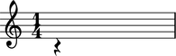

Working with rests

Changing duration
Change rest duration by direct assignment.
abjad> rest = Rest((1, 4))

abjad> rest.duration = (3, 16)
Any duration token will work on the right-hand side of the assigment operator.
Using pitch as a vertical positioner
In addition to the attributes inherited from the _Leaf class (such as duration, grace, etc.), the Rest class also possesses a pitch attribute.
This may seem strange given that rests represent the absence of sound.
However, as a glyph in a score, rests also necessarily have a vertical position relative to the staff.
By default the vertical position of rests is set automatically by the LilyPond renderer, but it can be set arbitrarily with the pitch attribute.
abjad> rest.pitch = -1

Notice how the position of the rest is here moved down so it falls exactly on B3.
To remove pitch from a rest, simply set pitch to None.
abjad> rest.pitch = None
To do
The better way of setting vertical position in LilyPond is simply something like \once \override Rest #'staff-position = #-6, which sets staff-position explicitly on the LilyPond Rest grob. Notice, however, that Abjad currently affords no way to set LilyPond overrides on the Rest grob. The reason for this is that Abjad allows for automatic LilyPond overrides of only leaf interface and not of leaves themselves. So we should remedy this and allow for leaf overrides directly.